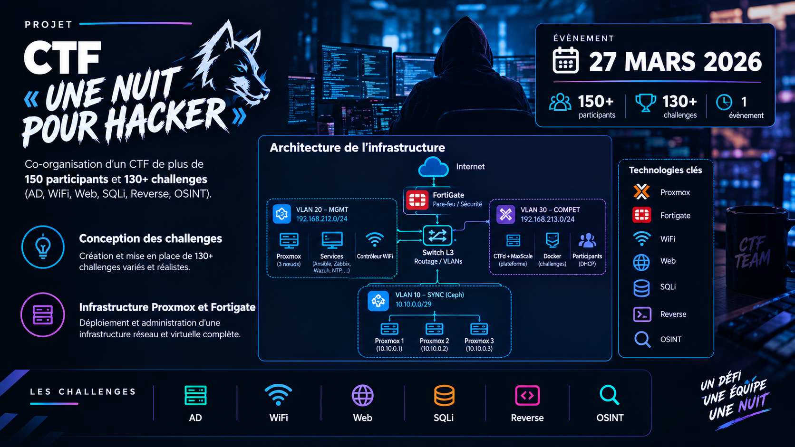
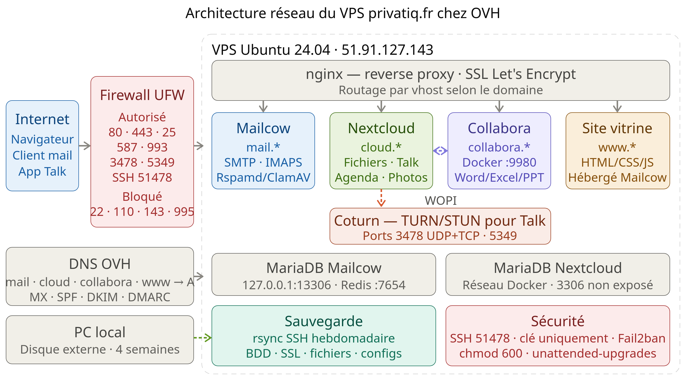

Manager en Ingénierie Informatique, Cybersécurité
Cursus Bac+5 orienté audit, pentest et sécurité des systèmes d'information, mené en alternance. C'est ici que se rejoignent l'expérience de terrain et la pratique offensive.
Projets CTF
CTF « Une nuit pour hacker »
Co-organisation d'un CTF de plus de 150 participants et 130+ challenges (AD, WiFi, Web, SQLi, Reverse, OSINT).
- Conception des challenges
- Infrastructure Proxmox et Fortigate
ProxmoxFortigateActive DirectoryWiFiWebSQLiReverseOSINT
[Schéma ou capture du projet]

Mémoire Technique
« Dans quelle mesure les entreprises peuvent-elles reprendre le contrôle de leurs données ? »
- Souveraineté numérique et dépendance aux acteurs du cloud
- Cadre du RGPD
- Alternatives de cloud souverain
Souveraineté numériqueRGPDCloud souverain
[Schéma ou capture du projet]
